01Contexte
Depuis le projet Infra-Site, le réseau de RIOCA sort sur Internet par le pare-feu Zyxel, puis par un seul routeur, RNET1, relié à un seul accès. Si RNET1 ou son lien tombe, l'entreprise perd Internet, et le serveur web de la DMZ n'est plus joignable de l'extérieur.
L'objectif : ajouter un deuxième routeur, RNET2, relié à un autre accès, et faire en sorte qu'il prenne le relais sans intervention. Nous avons d'abord listé les pannes possibles et ce que la solution doit couvrir :
| Élément | Panne possible | Couvert ? |
|---|---|---|
| RNET1 | Panne, plantage, coupure de courant | Oui |
| Lien RNET1 – switch SWNET | Câble ou port défaillant | Oui |
| Lien RNET1 – fournisseur d'accès | Câble débranché ou port coupé | Oui |
| Fournisseur d'accès de RNET1 | Panne de l'opérateur, câble toujours branché | Oui, avec IP SLA (partie 4) |
| Switch SWNET, pare-feu Zyxel, les deux accès en même temps | Panne | Non : hors du sujet |
Il fallait un routeur Cisco 2911 identique à RNET1, un port du switch SWNET, une deuxième prise vers l'accès Internet de la salle, et deux adresses de plus dans le réseau de la zone Internet (192.168.3.248/29) : une pour RNET2, une pour l'IP virtuelle. HSRP et IP SLA sont inclus dans l'IOS, sans licence à acheter.
02Choix
HSRP fait partager une IP virtuelle (192.168.3.249) aux deux routeurs. Un seul y répond, le routeur actif ; l'autre attend en secours. Le pare-feu envoie tout vers cette IP virtuelle : il suit le routeur actif sans savoir lequel c'est.
| Choix | Pourquoi |
|---|---|
| RNET1 en priorité 105, RNET2 en 100 | La plus haute priorité devient active. 105 et pas 101 : quand RNET1 perd son accès, sa priorité baisse de 10 et doit passer sous les 100 de RNET2 (105 − 10 = 95) |
| Preempt sur les deux routeurs | Quand RNET1 revient, il reprend le rôle actif tout seul |
| Timers 1 et 3 secondes | Les routeurs s'envoient un message chaque seconde ; sans nouvelle pendant 3 secondes, le secours devient actif |
| Suivi de l'accès Internet par IP SLA | HSRP seul ne voit pas une panne du fournisseur d'accès : RNET1 continue d'envoyer ses messages et reste actif. IP SLA vérifie toutes les 5 secondes que la passerelle de l'opérateur répond |
| NAT recopié sur RNET2 | Chaque routeur traduit les adresses vers son propre accès, sinon le trafic ne pourrait pas sortir par RNET2 |
L'impact sur le reste du réseau est faible : la route par défaut du Zyxel vise l'IP virtuelle, et un port de SWNET passe dans le VLAN 92. Les règles du pare-feu filtrent par zone et par objet, donc aucune ne change : il suffit d'ajouter RNET2 au groupe d'objets de la règle de sauvegarde TFTP. Le LAN, la DMZ et les VLAN ne bougent pas.
03Maquette
Avant de toucher au matériel, nous avons reproduit la zone Internet dans Packet Tracer : un PC du LAN, un routeur à la place du Zyxel, SWNET, les deux RNET et deux routeurs « fournisseur d'accès ». Les deux portent l'adresse 8.8.8.8 : Internet reste joignable quel que soit le routeur actif.

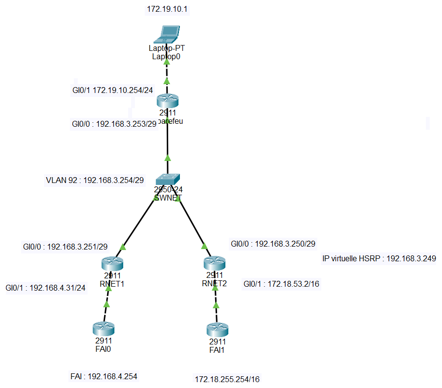
La configuration HSRP de RNET1. RNET2 a la même, avec sa propre adresse (192.168.3.250) et la priorité 100 :
RNET1(config)#interface Gi0/0
RNET1(config-if)#ip address 192.168.3.251 255.255.255.248
RNET1(config-if)#standby 1 ip 192.168.3.249
RNET1(config-if)#standby 1 priority 105
RNET1(config-if)#standby 1 preempt
RNET1(config-if)#standby 1 timers 1 3
RNET1(config-if)#standby 1 track GigabitEthernet0/1Packet Tracer ne connaît pas IP SLA. Dans la maquette, RNET1 surveille donc seulement l'état de son interface vers le fournisseur d'accès (Gi0/1) : si elle tombe, sa priorité baisse de 10.
| Test en maquette | Résultat | Preuve |
|---|---|---|
| 1. Fonctionnement normal | RNET1 actif à 105, RNET2 en secours ; le trafic sort par RNET1 | Fig. 2 |
| 2. Coupure du lien de RNET1 vers son fournisseur | RNET1 descend à 95, RNET2 devient actif ; un seul ping perdu | Fig. 3 |
| 3. Retour du lien | RNET1 reprend le rôle actif grâce au preempt | Constaté avec show standby brief |
| 4. Panne complète de RNET1 | RNET2 devient actif en quelques secondes ; deux pings perdus, dont le premier, perdu le temps de trouver l'adresse MAC (ARP) | Fig. 4 |

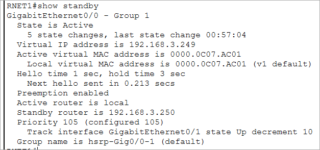

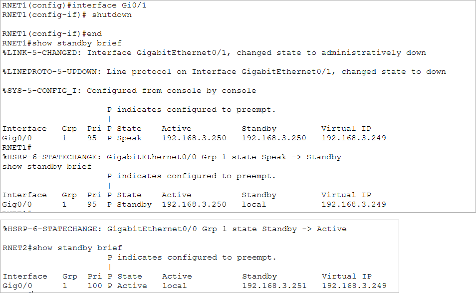
Active, priorité 100." width="954" height="587" loading="lazy">
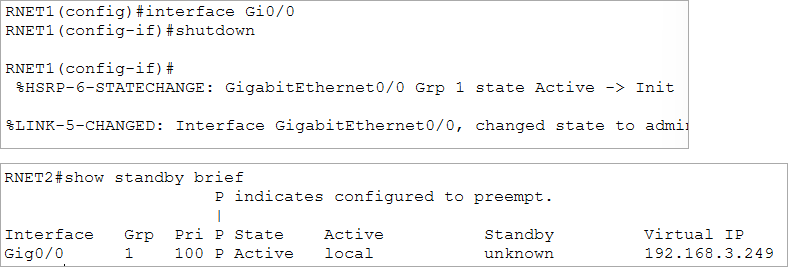
04Mise en place
Sur le matériel, RNET1 garde son nom d'hôte d'Infra-Site, RNET_GRP3. Le suivi de l'interface de la maquette a un défaut : si l'opérateur tombe alors que le câble reste branché, l'interface reste active, RNET1 garde sa priorité de 105 et le LAN perd Internet alors que le deuxième accès fonctionne.
Sur les vrais routeurs, nous l'avons remplacé par IP SLA : toutes les 5 secondes, le routeur envoie un ping à la passerelle de son fournisseur d'accès. L'objet track 1 suit ce ping, et quand il échoue, HSRP baisse la priorité de 10. Le ping échoue aussi quand le câble est coupé : IP SLA couvre les deux cas.
RNET_GRP3(config)#ip sla 1
RNET_GRP3(config-ip-sla)#icmp-echo 192.168.4.254 source-interface GigabitEthernet0/1
RNET_GRP3(config-ip-sla-echo)#frequency 5
RNET_GRP3(config-ip-sla-echo)#exit
RNET_GRP3(config)#ip sla schedule 1 life forever start-time now
RNET_GRP3(config)#track 1 ip sla 1 reachability
RNET_GRP3(config-track)#exit
RNET_GRP3(config)#interface GigabitEthernet0/0
RNET_GRP3(config-if)#standby 1 track 1 decrement 10
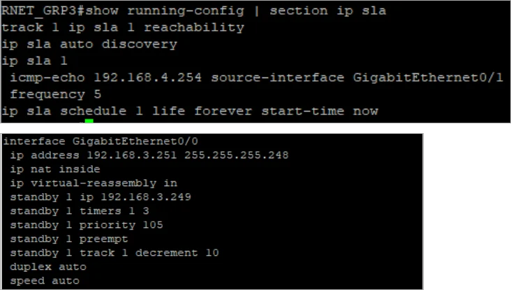
RNET2 reprend la même configuration. Seuls changent :
| Élément | RNET1 (RNET_GRP3) | RNET2 |
|---|---|---|
| Adresse côté zone Internet | 192.168.3.251 | 192.168.3.250 |
| Priorité HSRP | 105 (actif) | 100 (secours) |
| Passerelle du fournisseur d'accès, visée par IP SLA | 192.168.4.254 | 172.18.255.254 |
| Adresse publiée du serveur web de la DMZ (NAT statique) | 192.168.4.32 | 172.18.53.1 |
Sur SWNET, le port relié à RNET2 (vérifié avec show cdp neighbors) passe dans le VLAN 92 :
interface GigabitEthernet1/0/22
switchport mode access
switchport access vlan 92
no shutdownSur le pare-feu Zyxel, trois changements :
- interface wan1 : l'adresse reste 192.168.3.253, seule la passerelle passe à 192.168.3.249, l'IP virtuelle ;
- route statique par défaut : de 192.168.3.251 (RNET1) à 192.168.3.249 ;
- groupe d'objets EQUIP_BACKUP : ajout de RNET2, pour que la règle de sauvegarde TFTP le laisse passer.

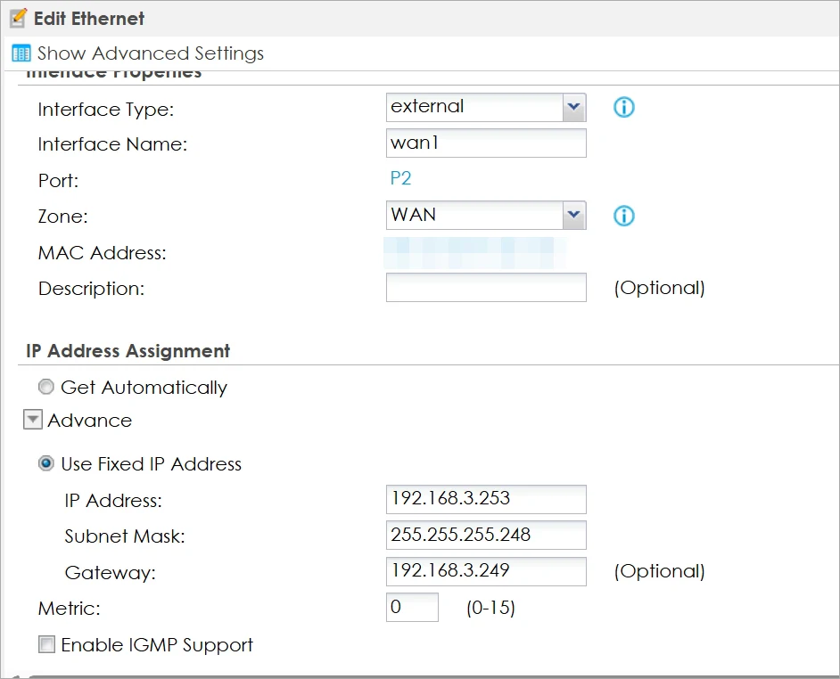
05Tests sur le matériel
Les tests sont lancés depuis un poste du service IT, avec un ping -t et un tracert vers 8.8.8.8. Le troisième saut du tracert montre par quel routeur sort le trafic : 192.168.3.251 pour RNET1, 192.168.3.250 pour RNET2.
| Test | Résultat | Preuve |
|---|---|---|
| 5. Fonctionnement normal | RNET1 actif à 105, RNET2 en secours à 100 avec son suivi IP SLA actif ; le trafic sort par RNET1 | Fig. 7, 8 |
| 6. Panne complète de RNET1 (port coupé sur SWNET) | RNET2 actif, il ne voit plus RNET1 (« unknown ») ; le trafic sort par RNET2 | Fig. 9, 10 |
| 7. Coupure du lien de RNET1 vers son fournisseur | Track à Down, RNET1 à 95 et en secours ; RNET2 actif et traduit le trafic du poste vers son propre accès | Fig. 11, 12 |
| 8. Retour du lien | RNET1 reste à 95 jusqu'au ping IP SLA suivant, puis reprend le rôle actif quelques secondes plus tard | Constaté avec show standby brief et tracert |
| 9. Panne de l'opérateur, câble branché (accès de RNET1 coupé côté campus) | Gi0/1 reste active mais le track passe à Down (« Timeout ») : RNET1 à 95, RNET2 actif ; 3 pings perdus, une dizaine de secondes | Fig. 13, 14 |
| 10. Sauvegarde TFTP de RNET2 | Copie acceptée par le Zyxel, fichier reçu sur le serveur (3 522 octets, le 16/10 à 10:55) | Fig. 15 |
| 11. Accès SSH à RNET2 | Connexion réussie avec le compte du service IT, bannières affichées | Fig. 16 |

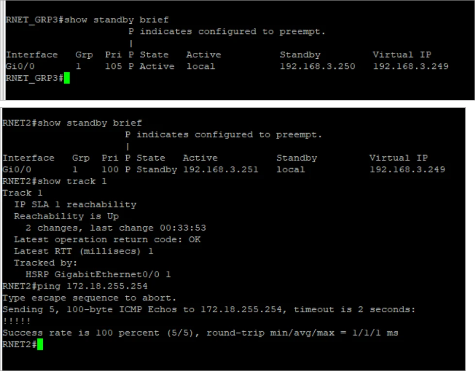

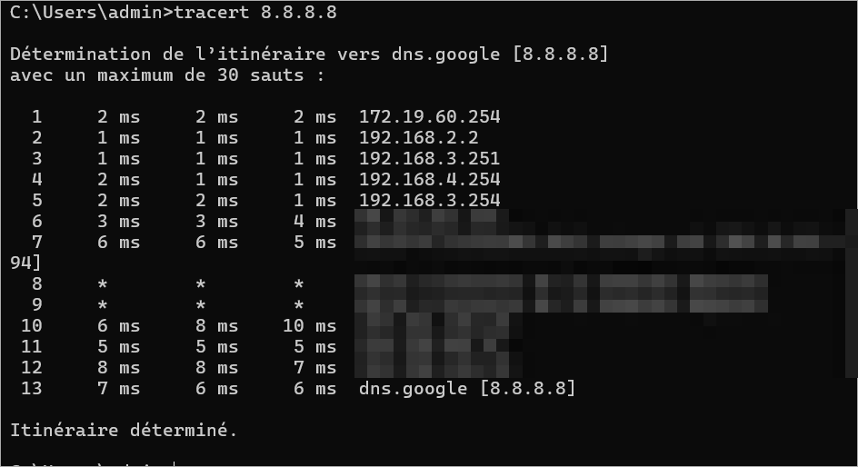

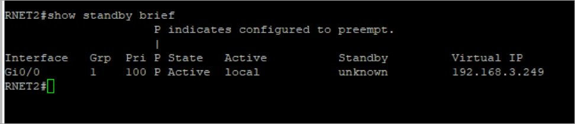

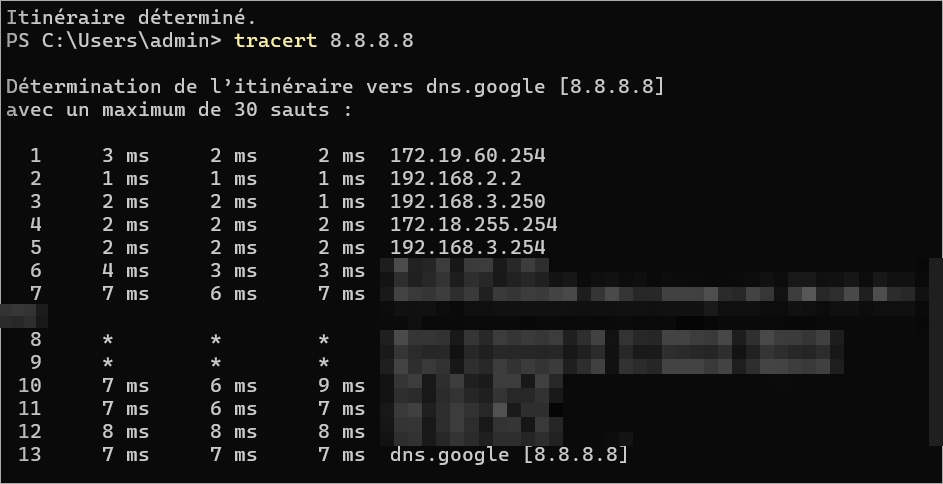

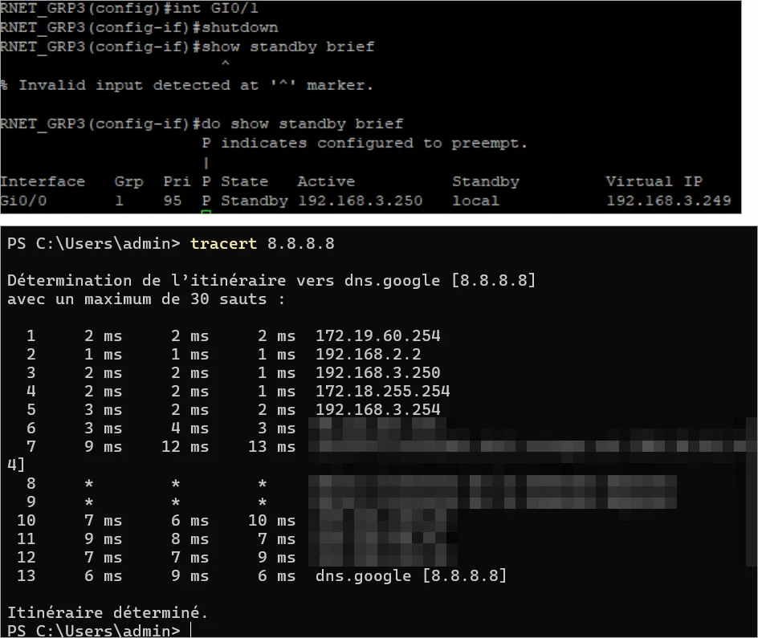

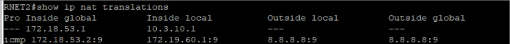

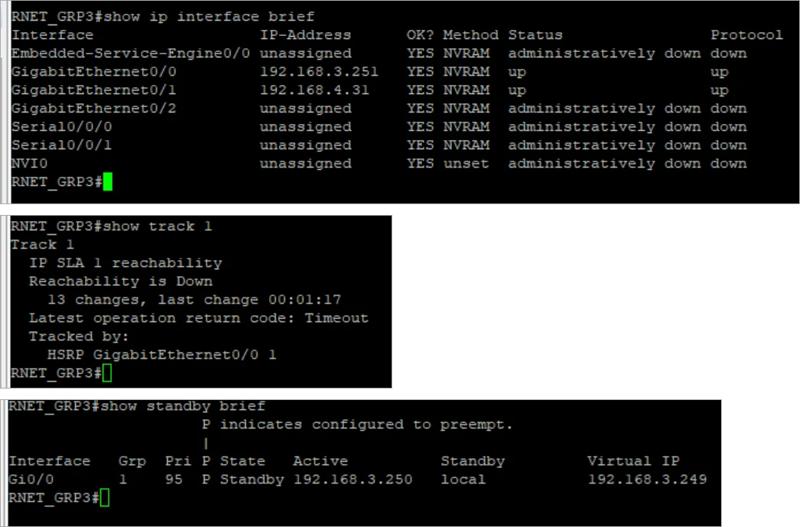

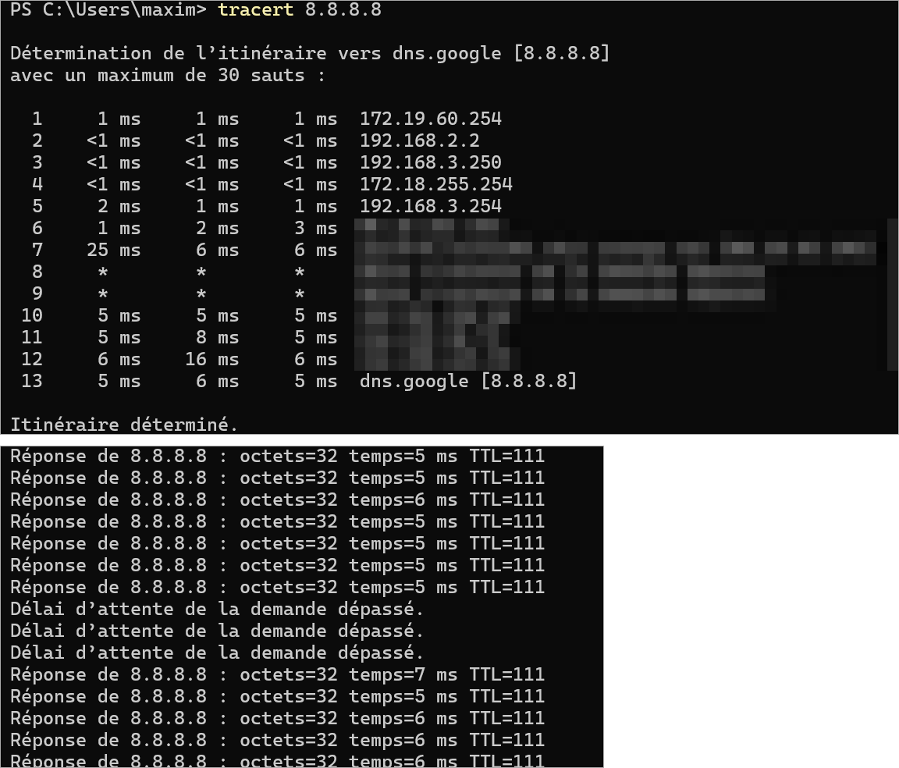

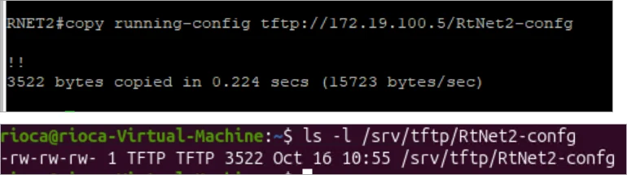

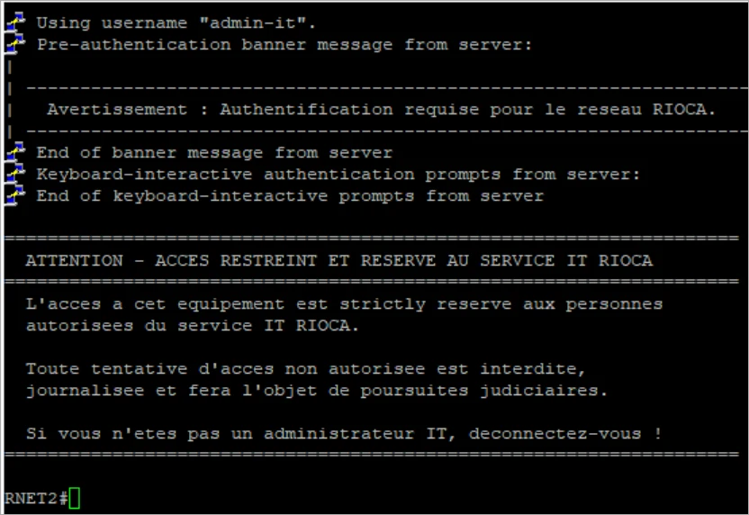
Dans les tracert, le saut 192.168.3.254 qui suit la passerelle de l'opérateur est un routeur du campus, pas SWNET : la même adresse existe de l'autre côté du NAT. Les deux accès rejoignent ce même routeur.
06Trouver la panne
Les trois pannes donnent la même bascule vers RNET2. Pour savoir laquelle a eu lieu, quelques commandes suffisent :
| Vérification | RNET1 coupé de SWNET (ou éteint) | Lien de RNET1 vers l'opérateur coupé | Opérateur en panne, câble branché |
|---|---|---|---|
| show standby brief sur RNET2 | Secours « unknown » : RNET2 n'entend plus RNET1 | Secours 192.168.3.251 | Secours 192.168.3.251 |
| show ip interface brief sur RNET1 | Gi0/0 down | Gi0/1 down | Gi0/0 et Gi0/1 up |
| show track 1 sur RNET1 | Up | Down (« Socket set option error ») | Down (« Timeout ») |
| Conclusion | RNET1 ou son câble vers SWNET | Câble ou port Gi0/1 de RNET1 | L'opérateur, au-delà du câble |
On retrouve ces indices dans les captures : « unknown » au test 6 (fig. 9), RNET1 en secours à 95 au test 7 (fig. 11), et au test 9 une interface active avec un suivi à Down (fig. 13).
07Difficultés
- Mauvaise cible sur RNET2. L'IP SLA de RNET2 visait d'abord la passerelle de l'opérateur de RNET1 (192.168.4.254). Le ping aurait échoué en permanence : RNET2 serait resté à 90 et n'aurait jamais pris le relais. Une opération IP SLA lancée ne se modifie pas : il a fallu la supprimer (no ip sla 1) puis la recréer avec 172.18.255.254.
- Adresse ou passerelle du Zyxel. Saisir 192.168.3.249 comme adresse de wan1, au lieu de sa passerelle, crée un conflit avec l'IP virtuelle et coupe le retour du trafic. L'adresse reste 192.168.3.253, seule la passerelle change.
- Une route oubliée. Après le changement de passerelle, couper RNET1 coupait encore Internet. Sur RNET2, show ip nat statistics affichait « Hits: 0 » : aucun paquet du LAN ne lui arrivait. Une route statique par défaut du Zyxel visait toujours 192.168.3.251 et contournait l'IP virtuelle. Une fois corrigée vers 192.168.3.249, le test 6 a été validé.
- Délai d'attente refusé. timeout 1000 renvoie une erreur : le délai d'attente d'IP SLA ne peut pas être plus court que son seuil (5 000 ms par défaut). Nous avons gardé la valeur par défaut.
- Packet Tracer. IP SLA n'y existe pas : d'où le suivi de l'interface en maquette, et une configuration différente sur le matériel.
08Bilan et limites
Les 11 tests sont validés : 4 en maquette et 7 sur le matériel. La panne d'un routeur, de son câble ou de son opérateur fait passer le trafic par l'autre routeur, puis il revient tout seul sur RNET1. Ce qui reste à savoir :
| Limite | Conséquence |
|---|---|
| IP SLA vise la passerelle de l'opérateur | Une coupure plus loin chez l'opérateur ne serait pas détectée. Piste : viser une adresse sur Internet, comme 8.8.8.8 |
| La table NAT n'est pas partagée entre les deux routeurs | Après une bascule, les connexions déjà ouvertes sont coupées |
| Les deux routeurs sortent par des réseaux différents | L'adresse publiée du serveur web change après une bascule (192.168.4.32 puis 172.18.53.1) |
| SWNET et le Zyxel ne sont pas doublés | Ils restent des points uniques de panne. Les deux accès rejoignent aussi le même routeur du campus, puis le même opérateur : une panne à ce niveau coupe les deux |
| Le réseau /29 de la zone Internet est presque plein (5 adresses sur 6) | Un équipement de plus imposerait de passer en /28 |
Ce que j'en retiens : HSRP seul ne protège que du routeur qui tombe. Pour un opérateur en panne, il faut lui dire quoi surveiller, et c'est IP SLA qui le fait. Et une maquette qui marche ne suffit pas : sur le matériel, c'est une route statique oubliée sur le pare-feu qui faisait échouer la bascule, trouvée grâce au compteur du NAT resté à zéro.